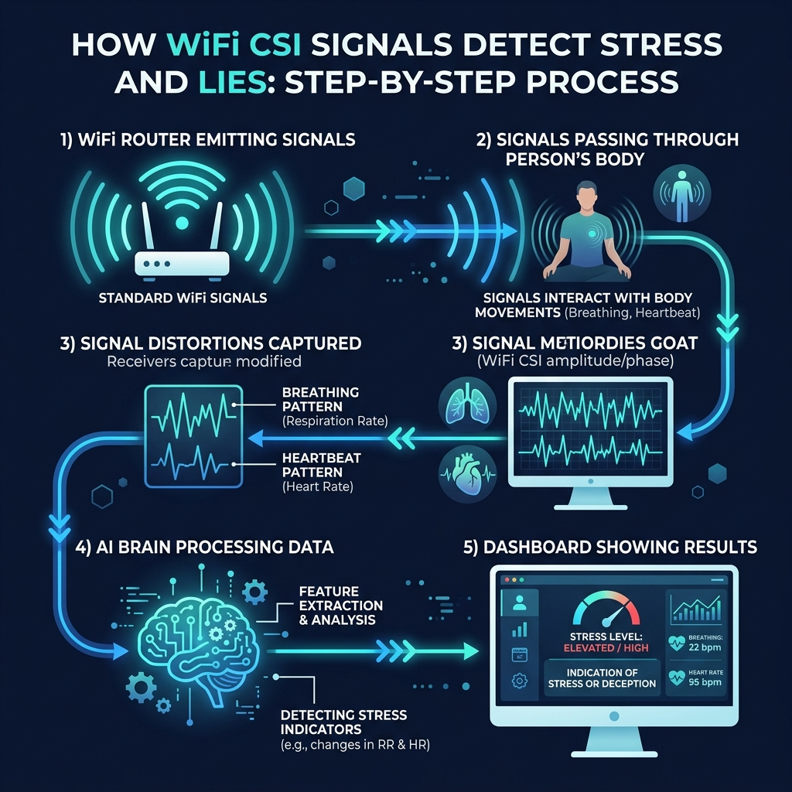

Astrix uses ambient WiFi signals to detect deception and stress — no wearables, no contact, no intrusion. Just point existing WiFi at a person and let the physics reveal the truth.
Astrix turns your existing WiFi router into a passive lie & stress detector — no new hardware needed in most setups.

Standard WiFi signals (802.11ax) pass through the subject's body, picking up micro-movements from breathing and heartbeat.
Our AI decodes physiological patterns linked to stress and deception from the disturbed signal — in real time, under 50ms.
A confidence-scored truth report is delivered instantly to the operator dashboard with trends, graphs, and event markers.
Astrix was founded on a singular insight: every living body disturbs the electromagnetic environment around it. When you lie, your autonomic nervous system triggers micro-responses — tiny shifts in breathing, heart rate, and muscle tension — that ripple into the WiFi signals passing through you.
We built the science, models, and hardware to read those ripples. The result is a system that sees what no camera, microphone, or polygraph can.
Four elegant steps from ambient WiFi signal to verified truth
Existing WiFi access points emit 802.11ax signals that pass through bodies in the environment. Astrix's proprietary hardware captures the Channel State Information (CSI) from these signals with nanosecond precision.
Our signal processing engine isolates micro-perturbations caused by respiration, cardiac rhythm, and subtle muscle activity. Each physiological signature is mapped against our proprietary database of stress and deception markers.
A multi-layer neural network trained on millions of annotated physiological events scores each signal pattern. The model adapts in real-time, accounting for individual baseline variations and environmental noise.
Results are delivered in real-time through our dashboard with confidence scores, trend graphs, and event markers — giving operators a clear, auditable record of every assessment.
Enterprise-grade reliability in any environment
Zero physical contact needed. Works through walls, clothing, and barriers up to 15 meters away — completely invisible to the subject.
Results stream live with under 50ms latency — fast enough for natural conversation monitoring.
Simultaneously monitor up to 8 individuals in a room, each with independent physiological profiles.
All signal analysis runs locally. No audio, video, or biometric data ever leaves the device.
Adaptive algorithms establish each person's unique baseline, dramatically reducing false-positive rates.
AES-256 encrypted storage, role-based access control, and full audit logging meet the strictest compliance requirements — GDPR, HIPAA, and ISO 27001 ready.
Supplement interrogation and witness assessment without the legal limitations of traditional polygraphs. Passive monitoring during interviews.
Protect sensitive negotiations, internal investigations, and executive communications from deception and social engineering.
Provide therapists with objective physiological stress data to complement patient-reported experiences and track treatment progress over time.
Enable longitudinal psychophysiology studies without the intrusion of wearable sensors — unlocking naturalistic data at scale.
Watch a live demonstration of CSI-based stress and lie detection. We'll show you real signal data, the AI engine at work, and the operator dashboard — all in 20 minutes.
Join our early access program or get in touch to learn how Astrix can be deployed for your use case.